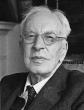

 |
Arnold Toybee |
(i) Polynesians, Eskimos, and Nomads
It might seem that, once a civilization had been brought into existence, its growth would be a matter of course; but this is not so, as is proved by the record of certain civilizations which have achieved existence but then failed to grow. The fate of these arrested civilizations has been to encounter a challenge on the border-line between the degree of severity which evokes a successful response and the greater degree which entails defeat. Three cases present themselves in which a challenge of this kind has come from the physical environment. The result in each case has been a tour de force on the part of the respondents which has so engrossed the whole of their energies that they have had none left over for further development.
The Polynesians achieved the tour de force of inter-insular voyaging between Pacific islands. It eventually defeated them and they relapsed into primitive life on their several now isolated islands.
The Eskimos achieved an extraordinarily skilled and specialized annual cycle adapted to life on the shores of the Arctic.
The Nomads achieved a similar annual cycle as herdsmen on the semi-desert Steppe. The ocean with its islands and the desert with its oases have many points in common. The evolution of Nomadism during periods of desiccation is analysed. It is noted that hunters become agriculturists before taking the further step of becoming Nomads. Cain and Abel are types of the agriculturist and the Nomad. Nomad incursions into the domains of civilizations are always due either to increased desiccation 'pushing' the Nomad off the Steppe or to the breakdown of a civilization creating a vacuum which 'pulls' the Nomad in as a participant in a Volkerwanderung.
(2) The 'Osmanlis
The challenge to which the Ottoman system was a response was the transference of a Nomad community to an environment in which they had to rule sedentary communities. They solved their problem by treating their new subjects as human flocks and herds, evolving human equivalents of the sheep-dogs of the Nomad in the form of a slave 'household' of administrators and soldiers. Other examples of similar Nomad empires are mentioned, the Mamluks for instance; but the 'Osmanli system surpassed all others in efficiency and duration. It suffered, however, like Nomadism itself, from a fatal rigidity.
(3) The Spartans
The Spartan response to the challenge of over-population in the Hellenic World was to evolve a tour deforce which in many respects resembles that of the 'Osmanlis, with the difference that in the Spartan case the military caste was the Spartan aristocracy itself; but they too were 'slaves', enslaved to the self-imposed duty of holding down permanently a population of fellow-Greeks.
(4) General Characteristics
Eskimos and Nomads, 'Osmanlis and Spartans have two features in common: specialization and caste. (In the former pair, dogs, reindeer, horses, and cattle supply the place of the human slave castes of the 'Osmanlis.) In all these societies the human beings are degraded by specialization as boat-men, horse-men or warrior-men to a subhuman level in comparison with the all-round men, the ideal of Pericles' funeral speech, who alone are capable of achieving growth in civilization. These arrested societies resemble the societies of bees and ants, which have been stationary since before the dawn of human life on Earth. They also resemble the societies portrayed in 'Utopias'. A discussion of 'Utopias' follows, in which it is shown that 'Utopias' are generally the products of civilizations in decline and are attempts, in so far as they have a practical programme, to arrest the decline by pegging the society at its actual level at the moment.
—Arnold Toynbee, A Study of History